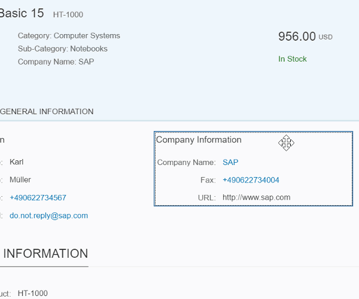
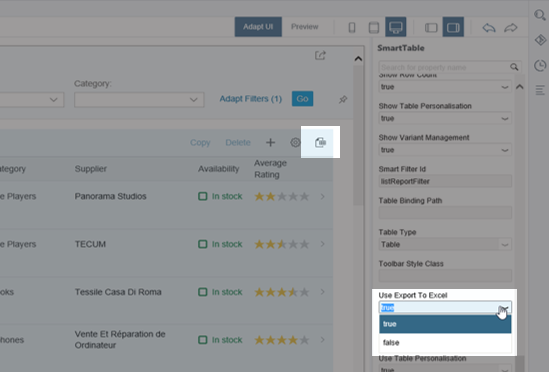

SAPUI5 Flexibility: Adapting UIs Made Easy
Modification-free, cost-saving, easy to use, and performant: Discover the new flexibility when adapting SAP Fiori UIs using SAPUI5 flexibility.
|
Flexibility is key! Enterprise software must adapt to rapidly changing environments. For example, customers need their apps to fit their processes without long IT projects to adapt them, and cloud providers want to run the same software for everyone to reduce TCO. You think adapting the user interface of SAP Fiori apps (for example, by adding, hiding or rearranging fields) is a complex process? Think again! SAPUI5 flexibility features allow upgrade-safe and modification-free UI changes on different levels (for example, at customer side) that can be performed by different users (end users, key users, and developers). |
 |
Here are four reasons why you want to use SAPUI5 flexibility:
-
It allows modification-free UI changes.
In contrast to extension points, UI changes made with SAPUI5 flexibility are modification-free. This means better lifecycle stability over release cycles, as the original app stays untouched and the changes are applied to the views only at runtime. This is achieved by storing the changes by the different users in separate layers. For more information, see Layering Concept.
-
It saves time and money.
In the past, changing the UI was a complex, time and money consuming process. SAPUI5 flexibility changes all that! For example, with its key user adaptation feature, even users without technical knowledge can easily make UI changes themselves.
-
It's easy to use.
Using SAPUI5 flexibility makes adapting the UIs of apps simple and intuitive, with WYSIWYG features and tools that are available right in the context the user is working in: end users personalize object pages of their apps and key users adapt apps for their teams directly in the SAP Fiori launchpad; developers can use the SAPUI5 Visual Editor in SAP Web IDE .
-
It's performant.
Last but not least: This flexibility doesn't come at the expense of performance! By caching the UI changes, SAPUI5 flexibility guarantees smooth working with your adapted apps.
How SAPUI5 flexibility supports its users
Hover over each quote for a brief description and click for more information.
End users can personalize object pages directly in the SAP Fiori launchpad
They just start the personalization mode and use intuitive WYSIWYG functions to adapt the UI to meet their unique, day-to-day needs.
For the personalization feature to be available, in SAP Fiori launchpad on ABAP or on SAP Cloud Platform Portal on Neo Environment, the app needs to be assigned to one of the user's roles.

For more information about personalizing object pages in SAP Fiori apps using SAPUI5 flexibility, open the documentation for SAP Fiori Launchpad in SAP NetWeaver AS for ABAP 7.52 with SAP_UI 752 on the SAP Fiori Launchpad overview page, and search for Personalizing Apps (Experimental).
Key users can adapt apps, which can then be used by all users, directly in the SAP Fiori launchpad
Here's a typical scenario: A team lead who has business knowledge, but probably no technical or development skills, wants to adapt an app for all users of the app. In the context of SAPUI5 flexibility, we call this team lead a key user. Let's assume, the users would need to see the supplier number in addition. Using the key user adaptation feature of SAPUI5 flexibility, the key user just starts the adaptation mode and changes the user interface using intuitive WYSIWYG functions. So, for example, it's very easy to rearrange UI elements using drag and drop or to add fields to the user interface. The supplier number would be added in no time. After releasing the adapted version of the app, it's available for all users working with the app.
For more information about adapting the user interface of SAP Fiori apps using the key user adaptation feature of SAPUI5 flexibility, open the documentation for SAP Fiori Launchpad in SAP NetWeaver AS for ABAP 7.52 with SAP_UI 752 on the SAP Fiori Launchpad overview page, and search for Adapting SAP Fiori UIs at Runtime. If you use SAP Cloud Platform Portal, see Adapting the UI at Runtime in the SAP Cloud Platform Portal documentation.
Administrators have to enable key users to be able to use key user adaptation. For more information, search for Enabling UI Adaptation at Runtime in the documentation for SAP Fiori launchpad in SAP NetWeaver AS for ABAP 7.52 with SAP_UI 752 in the SAP Fiori Launchpad overview page on the SAP Help Portal.
Key user adaptation - minimal effort for developers, maximum benefit for customers
What has to be considered when developing apps that support key user adaptation? In a nutshell: It's all about using the supported controls and stable IDs. For more information, see Key User Adaptation: Enable Your App. If you've developed your app based on SAP Fiori elements, you can make changes to the user interfaces using the intuitive SAPUI5 Visual Editor in SAP Web IDE, for example hiding the Export to Excel button.

For more information, see SAPUI Visual Editor in the SAP Web IDE Full-Stack guide.